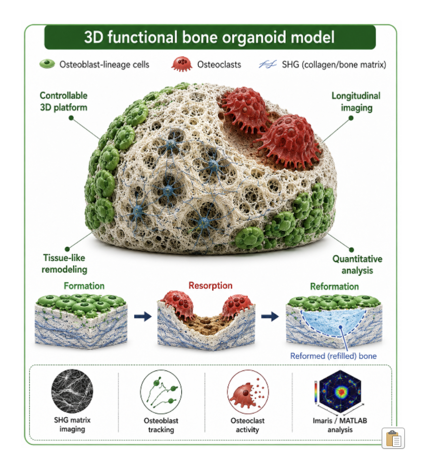

01
Doctoral research
Functional bone remodeling models
I develop and maintain multicellular three-dimensional bone models that reproduce sequential tissue formation, resorption, and reformation. These systems allow osteoblast and osteoclast behavior to be studied within a self-generated bone-like extracellular matrix while preserving the temporal sequence of remodeling.
